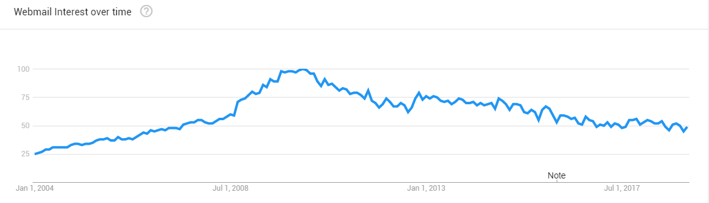
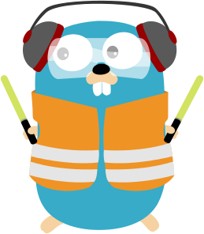

Isotope Mail Introduction
Marc Nuri
Why?

Big Brother
Privacy
Missing features
Alternatives lack features
Personal interest
Architecture (High level)
Mail Server
IMAP Server
SMTP Server
Back-end
Java Mail
Spring
API Gateway

Reverse Proxy [Traefik]
Front-end
ReactJS
Isotope Mail in Action!
Let's play!
Isotope storage model
Browser
IndexedDB
Redux
Back-end / Server-side
IMAP Server
Back-end Architecture
Spring Boot
Spring HATEOAS
Spring Webflux -> Reactive endpoints -> Server Sent Events
JavaMail
JUnit + Mockito + Powermock
Front-end Architecture
Redux
i18next
Web workers
SJCL (Stanford Javascript Crypto Library)
IndexedDB + IDB
TinyMCE
DOMPurify
Jest + Enzyme
HTML5 (Drag and Drop, Notifications...)
Scaling Isotope Mail
Q & A
Thank you!
github.com/manusa/isotope-mail
@MarcNuri
blog.marcnuri.com
 github.com/manusa/isotope-mail
github.com/manusa/isotope-mail